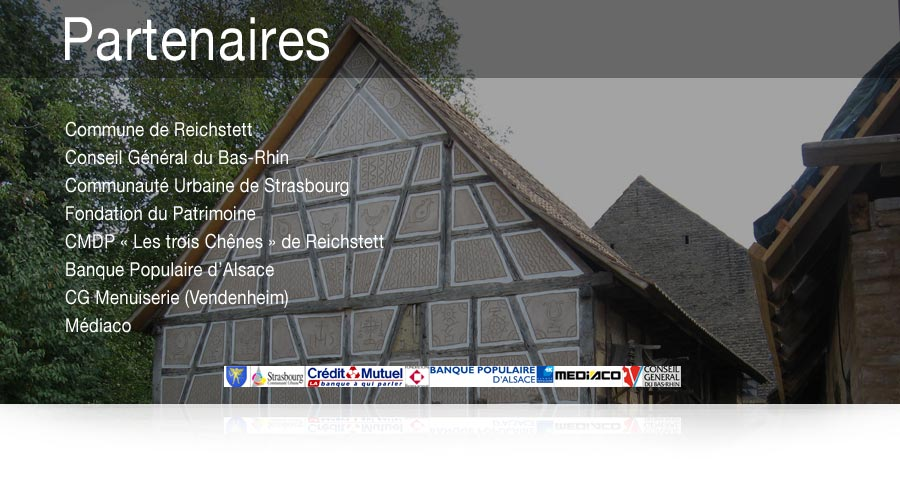

Instituciones
Municipio de Reichstett y Colectividad Europea de Alsacia.

Trabajar juntos
Organizaciones y artesanos que hacen posible el proyecto.
Municipio de Reichstett y Colectividad Europea de Alsacia.
ASMA, Lycée Le Corbusier y asociaciones que comparten conocimientos y voluntarios.
Carpinteros, especialistas en cal, artesanos, empresas y productores locales apoyan el parque.
Lista completa de colaboradores